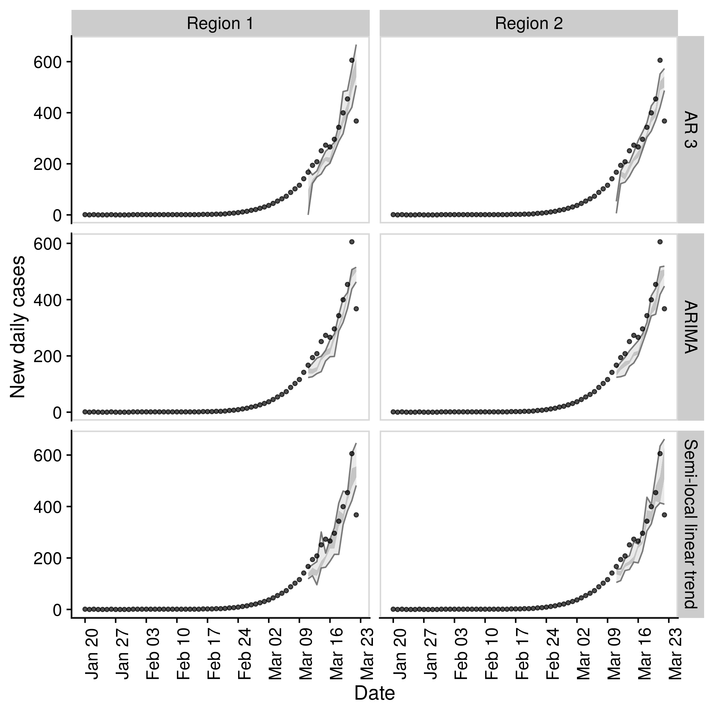

Warning: This package is a work in progress and is currently developed solely with the COVID-19 outbreak in mind. Breaking changes may occur and the authors cannot guarantee support.
Aim: To forecast the time-varying reproduction number and using this to forecast reported case counts.
Quick start
- Load the package (
bstsfor models,ggplot2for plotting, andcowplotfor theming)
- Define example observations.
obs_rts <- data.frame(rt = 1:20,
date = as.Date("2020-01-01")
+ lubridate::days(1:20))
obs_cases <- data.frame(cases = 5:24,
date = as.Date("2020-01-01")
+ lubridate::days(1:20))- Forecast a timeseries using a semi-local trend model and summarise it.
samples <- forecast_rt(obs_rts[1:10, ],
model = function(ss, y){bsts::AddSemilocalLinearTrend(ss, y = y)},
horizon = 7, samples = 10)
## Summarise forecast
summarised_forecast <- summarise_forecast(samples)
summarised_forecast
#> # A tibble: 7 x 9
#> date horizon median mean sd bottom lower upper top
#> <date> <int> <dbl> <dbl> <dbl> <dbl> <dbl> <dbl> <dbl>
#> 1 2020-01-12 1 11.1 11.1 0.150 10.9 11.0 11.2 11.3
#> 2 2020-01-13 2 12.0 12.1 0.377 11.6 11.9 12.1 13.0
#> 3 2020-01-14 3 13.0 13.1 0.353 12.8 12.9 13.2 14.0
#> 4 2020-01-15 4 14.0 14.2 0.575 13.4 13.8 14.1 15.4
#> 5 2020-01-16 5 15.0 15.3 0.603 14.7 14.7 15.0 16.5
#> 6 2020-01-17 6 16.0 16.3 0.656 15.7 15.7 16.0 17.5
#> 7 2020-01-18 7 16.9 17.2 0.625 16.7 16.7 16.9 18.4- Score the forecast
scores <- score_forecast(samples, obs_rts)
summarise_scores(scores)
#> # A tibble: 5 x 8
#> score bottom lower median mean upper top sd
#> <chr> <dbl> <dbl> <dbl> <dbl> <dbl> <dbl> <dbl>
#> 1 bias 0.33 0.5 0.5 0.543 0.6 0.770 0.151
#> 2 crps 0.0550 0.0636 0.0951 0.0974 0.132 0.140 0.0376
#> 3 dss -3.05 -2.02 -1.12 -1.57 -0.915 -0.803 0.897
#> 4 logs -0.680 -0.586 -0.0247 -0.0672 0.446 0.520 0.551
#> 5 sharpness 0.160 0.190 0.237 0.267 0.334 0.412 0.0996- Plot the forecast

- Iteratively fit the forecast and plot this to visualise the forecast quality
forecast_eval <- evaluate_model(obs_rts = obs_rts,
obs_cases = obs_cases,
model = function(ss, y){bsts::AddSemilocalLinearTrend(ss, y = y)},
horizon = 7, samples = 10)
forecast_rts <- forecast_eval$forecast_rts
## Plot forecast
plot_forecast_evaluation(forecast_rts, obs_rts, horizon_to_plot = c(1, 3, 7)) +
ggplot2::facet_wrap(~ horizon, ncol = 1) +
cowplot::panel_border()
#> Warning in horizon == horizon_to_plot: longer object length is not a multiple of
#> shorter object length
Evaluate across models
- Define a list of models.
## List of forecasting bsts models wrapped in functions.
models <- list("Sparse AR" = function(ss, y){bsts::AddAutoAr(ss, y = y, lags = 7)},
"Semi-local linear trend" = function(ss, y){bsts::AddSemilocalLinearTrend(ss, y = y)})- Compare across models.
evaluations <- compare_models(obs_rts = obs_rts,
obs_cases = obs_cases,
models = models,
horizon = 7, samples = 10)- Plot evaluation of models over a set of time horizons.
plot_forecast_evaluation(evaluations$forecast_rts, obs_rts, c(1, 3, 7)) +
ggplot2::facet_grid(model ~ horizon) +
cowplot::panel_border()
#> Warning in horizon == horizon_to_plot: longer object length is not a multiple of
#> shorter object length
- Score across models
summarise_scores(evaluations$rt_scores)
#> # A tibble: 10 x 9
#> score model bottom lower median mean upper top sd
#> <chr> <chr> <dbl> <dbl> <dbl> <dbl> <dbl> <dbl> <dbl>
#> 1 bias Semi-local linear… 0.100 0.4 0.5 0.478 0.6 0.8 0.178
#> 2 bias Sparse AR 0 0 0.100 0.116 0.200 0.4 0.127
#> 3 crps Semi-local linear… 0.0518 0.0762 0.124 0.240 0.204 1.45 0.374
#> 4 crps Sparse AR 0.317 1.29 2.41 3.23 4.27 9.44 2.57
#> 5 dss Semi-local linear… -3.38 -2.38 -1.79 -1.36 -0.682 3.00 1.58
#> 6 dss Sparse AR 0.640 2.65 4.10 9.14 6.29 71.9 17.4
#> 7 logs Semi-local linear… -0.643 -0.171 0.299 0.378 0.711 2.18 0.760
#> 8 logs Sparse AR 1.13 2.21 2.80 7.36 3.82 54.5 20.9
#> 9 sharpne… Semi-local linear… 0.118 0.267 0.422 0.569 0.650 2.28 0.520
#> 10 sharpne… Sparse AR 0.151 1.38 2.39 2.54 3.42 5.23 1.46Evaluate across regions and models
- Define multiple timeseries
obs_rts_ts <- obs_rts %>%
dplyr::mutate(timeseries = "Region 1") %>%
dplyr::bind_rows(
obs_rts %>%
dplyr::mutate(timeseries = "Region 2")
)
obs_cases_ts <- obs_cases %>%
dplyr::mutate(timeseries = "Region 1") %>%
dplyr::bind_rows(
obs_cases %>%
dplyr::mutate(timeseries = "Region 2")
)- Compare across regions and models
evaluations <- compare_timeseries(obs_rts = obs_rts_ts,
obs_cases = obs_cases_ts,
models = models,
horizon = 7, samples = 10)- Plot comparison
plot_forecast_evaluation(evaluations$forecast_rts, obs_rts_ts, c(7)) +
ggplot2::facet_grid(model ~ timeseries) +
cowplot::panel_border()
- Summarise CRPS by region
summarise_scores(evaluations$rt_scores, "timeseries", sel_scores = "crps")
#> # A tibble: 4 x 10
#> timeseries score model bottom lower median mean upper top sd
#> <chr> <chr> <chr> <dbl> <dbl> <dbl> <dbl> <dbl> <dbl> <dbl>
#> 1 Region 1 crps Semi-local line… 0.0340 0.0636 0.0911 0.155 0.162 0.584 0.158
#> 2 Region 1 crps Sparse AR 0.357 1.13 2.94 3.30 5.06 8.29 2.36
#> 3 Region 2 crps Semi-local line… 0.0459 0.0797 0.110 0.148 0.164 0.546 0.127
#> 4 Region 2 crps Sparse AR 0.369 1.34 2.86 3.36 4.78 8.70 2.48- Summarise logs by horizon
summarise_scores(evaluations$rt_scores, "horizon", sel_scores = "logs")
#> # A tibble: 14 x 10
#> horizon score model bottom lower median mean upper top sd
#> <int> <chr> <chr> <dbl> <dbl> <dbl> <dbl> <dbl> <dbl> <dbl>
#> 1 1 logs Semi-loca… -0.908 -0.659 -0.301 -0.271 0.0498 0.978 0.516
#> 2 1 logs Sparse AR 1.10 1.37 1.66 2.19 2.28 6.03 2.03
#> 3 2 logs Semi-loca… -1.16 -0.619 -0.321 -0.233 -0.0169 1.16 0.638
#> 4 2 logs Sparse AR 1.49 1.98 2.20 3.60 2.55 14.2 7.43
#> 5 3 logs Semi-loca… -0.837 -0.378 -0.0848 0.0613 0.235 1.58 0.679
#> 6 3 logs Sparse AR 1.78 2.36 2.74 3.01 3.35 5.64 1.01
#> 7 4 logs Semi-loca… -0.631 -0.259 0.0125 0.180 0.474 1.59 0.635
#> 8 4 logs Sparse AR 2.30 2.72 2.98 3.66 4.14 7.98 1.60
#> 9 5 logs Semi-loca… -0.411 -0.119 0.0832 0.278 0.430 1.69 0.616
#> 10 5 logs Sparse AR 2.51 2.98 3.50 7.03 3.99 37.7 12.2
#> 11 6 logs Semi-loca… -0.377 0.0547 0.380 0.459 0.650 1.87 0.659
#> 12 6 logs Sparse AR 2.98 3.33 3.81 9.14 4.62 51.7 18.2
#> 13 7 logs Semi-loca… -0.241 0.299 0.514 0.681 0.942 2.04 0.689
#> 14 7 logs Sparse AR 3.22 3.82 4.39 7.33 6.18 24.9 6.70Docker
This package was developed in a docker container based on the rocker/geospatial docker image.
To build the docker image run (from the EpiSoon directory):
To run the docker image run:
The rstudio client can be found on port :8787 at your local machines ip. The default username:password is epinow:epinow, set the user with -e USER=username, and the password with - e PASSWORD=newpasswordhere. The default is to save the analysis files into the user directory.
To mount a folder (from your current working directory - here assumed to be tmp) in the docker container to your local system use the following in the above docker run command (as given mounts the whole episoon directory to tmp).
To access the command line run the following: